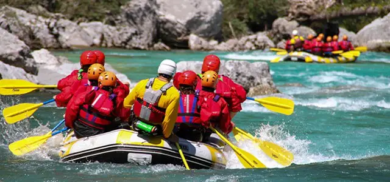

Water Rafting.Co
White water rafting is an exhilarating outdoor activity that involves navigating rivers and rapids using an inflatable raft. It combines teamwork, adventure, and the thrill of conquering nature's challenges. Whether you're paddling through calm waters or tackling turbulent rapids, white water rafting offers an unforgettable experience for adventurers of all skill levels. It's a perfect way to connect with nature, bond with friends, and create lasting memories.